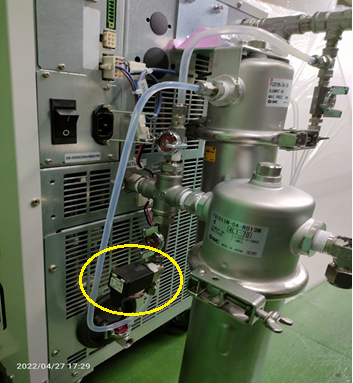

5.5. チラーに搭載されていた電磁弁の変更
5.5.1. 設計の問題点
SMC製のチラー（型式 HRS24）の背面には循環液の比抵抗を一定範囲に保つ為の バイパス配管が取付られています。配管途中にイオン交換樹脂が設置されており、 循環液を通す事で不純物を吸着します。 循環液をバイパス配管に流すかどうかは電磁弁により流路を切り替えています。
通常装置内部で使用する電磁弁（冷却水ライン等）のコイルは逆起電力発生を抑制する 為のデバイスが内臓された仕様（サージ対策品）を選定していますが、上記チラーの電磁弁は サージ対策品ではありませんでした。
その為、この電磁弁が動作するとサージノイズが発生し、機器の制御ケーブルや電源ケーブルを 経由してノイズが装置内に伝搬し通信異常を発生させていました。
5.5.2. 対策
電磁弁をサージ対策品に変更しました。
5.5.3. 教訓
購入品に搭載されている部品にノイズを発生する物が無いか確認する事
新たに選定する機器についてはノイズを発生させる部品を使っていないか採用前にメーカに確認する事